Align to Curve command
In the Subdivision Modeling environment, use the Home tab→Modify group→Align to Curve command
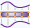
to fit the vertices of body cage faces to one or more existing curve sketches or to free-form curves (gestures) that you interactively sketch. You can undo and redo each curve edit until you achieve the desired shape. For more information, see Align a shape to a curve.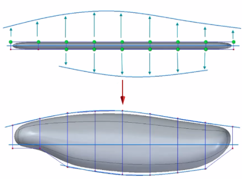
Defining the basic subdivision shape
When defining the initial subdivision shape using the Box, Cylinder, Sphere, or Torus command, consider the following:
-
For more predictable results, use orthographic views to define the shape, and then align the vertices to a sketch curve in the same view plane.
Example: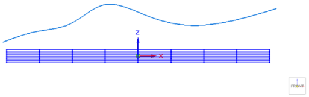
-
Create a shape with enough cage faces and vertices to provide sufficiently fine control along the alignment curve. On the Box command bar, for example, the number of XYZ segments you select determines the number of cage faces in the subdivision shape. The more X, Y, or Z segments in the base shape, the more vertices you can use to move to the curve.
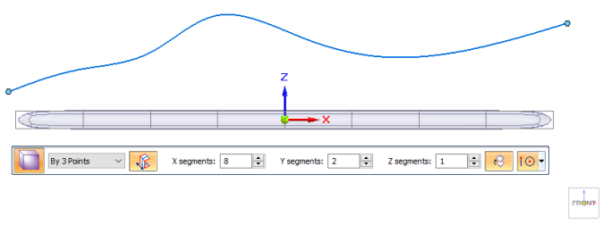
-
To achieve a sufficiently smooth subdivision body, you may also want to use the Blend command before you select the Align to Curve command, even if you selected the Smooth Edges option on the shape command bar. It is easier to round corners by blending.
Example:A blend value of 3 produced this result.
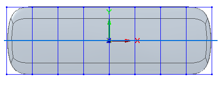
-
If you determine you need more vertices in one area to adjust the shape to the curve, you can use the Split command with the Chain option to select one or more faces to split, and then select the Align to Curve command again to move the vertices in that area. For an example of this, see the Tip at the end of the Align a shape to a curve topic.
Using the Align to Curve command
The step buttons on the Align to Curve command bar let you experiment with different vertex, direction, and curve selections. Use the Back and Forward buttons to undo each change you make in the Curves step.
All inputs to the Align to Curve command are shown in this example and explained below.
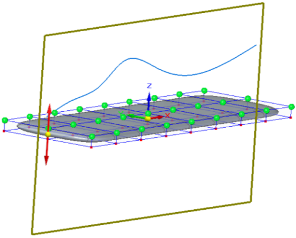
Selecting vertices
Vertex step—The vertices you select are highlighted in green. Only the highlighted vertices will move to the sketch curve.
Select vertices that lie in the same view plane as the sketch curve, and only select the vertices that you want to move to the sketch curve. Avoid selecting vertices that will overlap when moved.
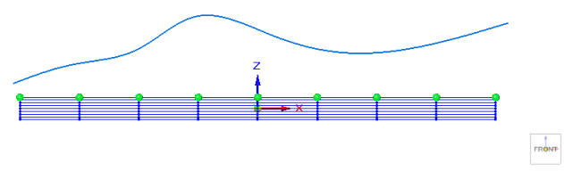
-
Click to select a vertex, and Shift+click to deselect a vertex.
-
Use click+drag to select multiple vertices. To deselect multiple vertices, use Shift/Ctrl+click+drag.
-
To aid in selecting multiple vertices on cage faces, click the Select command, and then press Ctrl+Spacebar to cycle through the different selection modes:
Face Priority
Edge Priority
Vertex Priority
Specifying alignment direction
Alignment Direction step—The selected vertices will move to the sketch curve in the direction indicated by the red, double-sided vector handle.
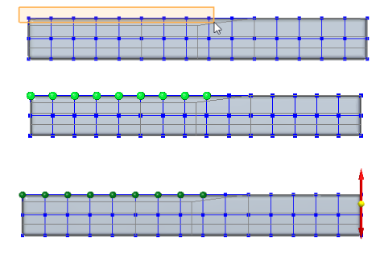
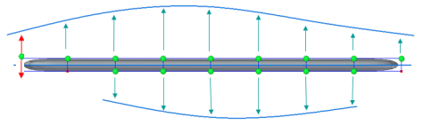
To move the points normal to the sketch curve instead of the shape, press N.
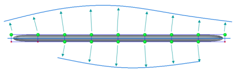
Using gestures versus sketches for input curves
When the Curves step begins, the projection plane is locked to the current view plane, as indicated by the brown plane outline. This is the plane the vertices will move to the alignment curve. To change to a different plane, press L on the keyboard.
There are three ways to provide input to the Curves step. You can experiment with different inputs and compare the results using the Back and Forward buttons on the command bar.
-
From the 3D Sketches collector in PathFinder, select an existing sketch or sketch curve, or click linear elements that are available on another subdivision body cage. Right-click to accept the curves.
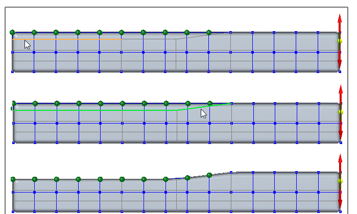
-
Click several points to create a curve through them. Right-click finishes the curve.
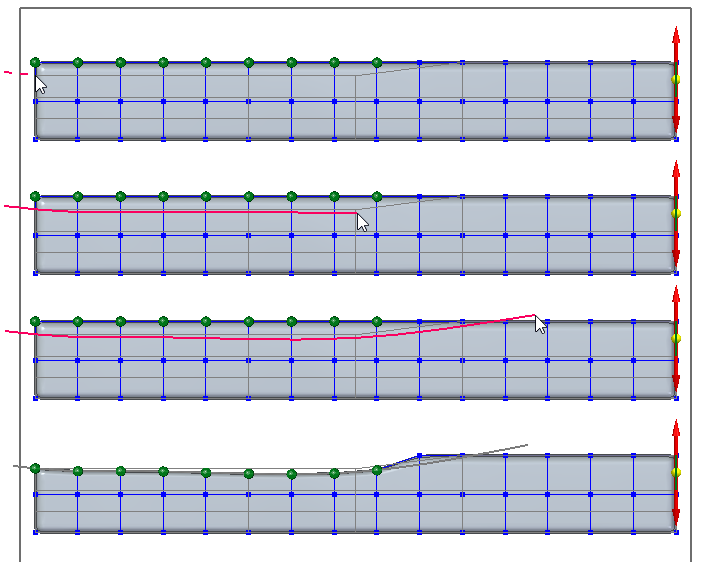
-
Gestures are a series of free-form sketch curves that you can draw to define a more fluid subdivision body.
Click+drag to gesture a curve (just one click+drag per curve). When you release the mouse button, the curve is created, and the selected, eligible vertices that are in the vicinity of the curve are moved to the curve along the specified vector.
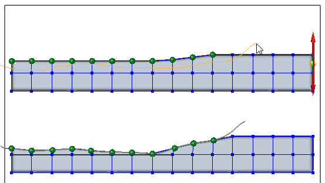
Four separate gestures were used to define the curved shape. You can adjust the vertex point locations by adding short gestures where needed.
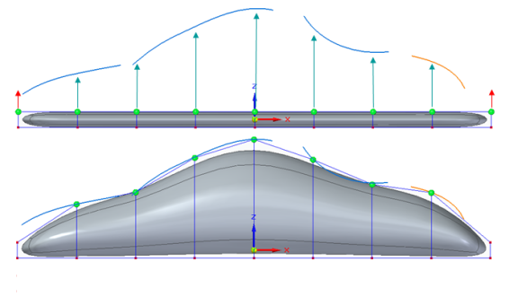
Gestures are temporary; they are not stored with the subdivision body and cannot be referenced in PathFinder as sketches are.
If you are designing a model based on one or more previously created sketches or edges in a subdivision body, then you can select the sketches one by one from the 3D Sketches collector in PathFinder by restarting the Curves step to apply each sketch, or by using the Chain selection option on the command bar instead of the Single selection option.
How do I
Subdivision Modeling workflowMove cage elements
Move using Quick Move
Use symmetric mode in Subdivision Modeling
Scale a subdivision model
Split subdivision model faces
Split faces with offset
Offset cage faces
Connect cage faces or edges with a bridge
Delete and fill cage faces
Align a shape to a curve
Learn more
Introduction to Subdivision ModelingUsing PathFinder with subdivision models
Working with cage elements
Creating subdivision features
Working with subdivision features
Moving and rotating cage elements
Look up more details
Subdivision Modeling commandBox command in Subdivision Modeling
Box command bar
Cylinder command in Subdivision Modeling
Cylinder command bar
Sphere command in Subdivision Modeling
Sphere command bar
Torus command
Torus command bar
Scale command in Subdivision Modeling
Blend command
Show Blend Values command
Split command
Split with Offset command
Bridge command
Cage Style command